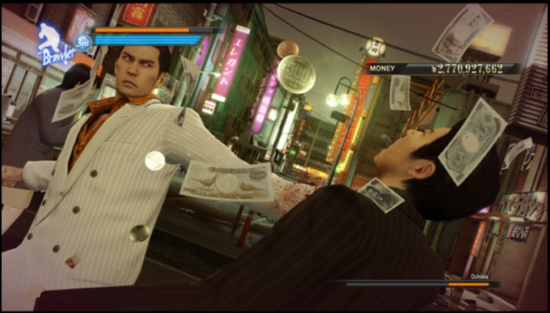

SEGA’s legendary Japanese series finally comes to PC. Fight like hell through Tokyo and Osaka as junior yakuza Kiryu and Majima. Take a front row seat to 1980s life in Japan in an experience unlike anything else in video gaming, with uncapped framerates and 4K resolutions. A legend is born.
Yakuza 0 is an action-adventure game set in an open world environment and played from a third-person perspective. The game takes place in December 1988, in Kamurocho and Sōtenbori, fictionalized recreations of Tokyo's Kabukichō and Osaka's Dōtonbori areas respectively. The player controls series protagonist Kazuma Kiryu and recurring character Goro Majima, alternating between the two at predetermined points during the story.
Players can freely walk around Kamurocho and Sotenbori, interacting with people they meet to trigger side-quests, battling enemies who attack them on the street, or playing one of several minigames, including fully playable versions of Sega arcade games such as Out Run, Super Hang-On, Space Harrier and Fantasy Zone. Completing certain objectives, such as eating every dish at a restaurant or reaching a target score in a minigame, will also grant the player special Completion Point currency; this CP can be spent at a shrine to receive additional bonuses, such as special items or character upgrades.
Character customization and growth is similar to the system from Ishin, with abilities earned by buying them off of a skill tree that is gradually unlocked during the game. Instead of using experience to buy skills, the player uses money acquired from fights or via Kiryu and Majima's side businesses. Money is more liberally awarded in Yakuza 0 than in previous entries, with every heavy attack causing enemies to drop cash. The player can lose their money if they encounter a special enemy called Mr. Shakedown, huge men who are far stronger than normal. If the player is beaten, they will lose all their cash, but can beat the enemy again to earn back their money and extra.
Kiryu and Majima also have side businesses that they run during the game to earn money: Kiryu invests real estate in Kamurocho, while Majima runs a cabaret club. Completing side-quests will often result in characters they meet offering to help with side businesses, allowing them to more easily and quickly progress. Progressing in side business sequences or training with specific masters will unlock additional abilities for purchase on the characters' skill trees.
A major innovation of Yakuza 0 is the addition of fighting styles for both Kiryu and Majima that can be switched in the middle of battle. Kiryu utilizes the balanced Brawler style, similar to that of previous entries; the powerful but slow Beast style, which allows him to use heavy weapons; and the fast boxing-based Rush style, which emphasizes mobility. Conversely, Majima uses the balanced Thug style; the weapons-oriented Slugger style, primarily focused around a baseball bat; and the tricky dance-based Breaker style. Completing Kiryu and Majima's side businesses will unlock an additional "Legendary" fighting style for the characters, the "Dragon of Dojima" and "Mad Dog of Shimano" styles, respectively.
in Steam